Tight binding tutorial

The tutorial is also hosted in GitHub.
Table of Contents
Tight binding is a method that expands orbitals as a linear combination of atomic orbitals, like the method with the corresponding acronym, LCAO. Sometimes they are refered as being the same, but let me note some differences between them. First, LCAO often encompasses large expansions to achieve chemical accuracy. Tight-binding, however, is more commonly used with a minimal basis. Another difference is the reduction to an active orbital space. The set of orbitals is reduced in tight binding to a subset around the chemical potential, e.g. only π orbitals in a polymer chain. In that sense, it is more similar to Hückel’s method. Also, frequently, only interactions with the first coordination shells are included. And finally, electron-electron interactions are commonly neglected in tight-binding. These differences stem from being two similar methods used by different communities with different purposes. Tight-binding is often a model to approximate the electronic structure of large solid state systems, and LCAO is a good first approximation to accurately approximate the electronic structure of small molecular systems. The chemist tries to predict mainly reactions for whose accurate predictions are needed whereas the physicist tries to explain features of materials in a search for new physics laws.
Most of the material of this article is inspired by a curse given by Prof. Tjeng Hao during 2020 pandemic lockdown.
We load linear algebra and plotting libraries first.
using Pkg; Pkg.add("Measures")
Pkg.add("Parameters")
using LinearAlgebra
using Plots
using Measures: mm
using Parameters
import PyPlot
pyplt = PyPlot
mpl = PyPlot.matplotlib
pyplt.matplotlib.style.reload_library()
pyplt.matplotlib.style.use("sci")
mpl.use(backend="Qt5Agg")
To plot the density of states we need to broaden/smear the spectral lines. Note that the line shape observed experimentally is broadened by the Doppler effect among other phenomena.
include("dos_broadening.jl")
In this tutorial we will neglect electron-electron interactions, focusing only on kinetic electron energy and electron-external potential. Sites refers to atoms in a lattice. Besides, we sometimes name sites rather than atomic orbitals because we think of (atomic) orbitals as being very localized around a site. This also helps distinguishing atomic from molecular/crystal orbitals, becoming simply sites and orbitals/states, respectively. Note that atomic orbitals are just used to contruct true eigenstates of the hamiltonian considered but the earlier are no proper states. They are used because functions with similar shape to eigenfunctions of the Hydrogen atom hamiltonian are a good first approximation to eigenfunctions of other hamiltonians.
Two site chain
graph LR;
1((1))---2((2));
A chain of two sites, one site with reference energy $0$ and the other $\Delta$ higher, has a simple tight binding hamiltonian
function buildH2(Δ,t)
# He⁺
[ 0 t; t Δ]
end
where $t$ is the hopping parameter.
# Two atomic orbitals at sites 1 and 2
t = 0; Δ = 2
println("A.1. t = $t, Δ = $Δ")
H = buildH2(Δ,t)
es, vs = eigen(H)
for i in 1:length(es)
println("Eigenstate with E = $(es[i]) and vector $(vs[i,:])")
end
A.1. t = 0, Δ = 2
Eigenstate with E = 0.0 and vector [1.0, 0.0]
Eigenstate with E = 2.0 and vector [0.0, 1.0]
Example 1
t = 2; Δ = 0
println("A.2. t = $t, Δ = $Δ")
H = buildH2(Δ,t)
es, vs = eigen(H)
for i in 1:length(es)
println("Eigenstate with E = $(es[i]) and vector $(vs[i,:])")
end
A.2. t = 2, Δ = 0
Eigenstate with E = -2.0 and vector [-0.7071067811865475, 0.7071067811865475]
Eigenstate with E = 2.0 and vector [0.7071067811865475, 0.7071067811865475]
Example 2
t = 1; Δ = 10
println("A.3. t << Δ; t = $t, Δ = $Δ")
H = buildH2(Δ,t)
es, vs = eigen(H)
for i in 1:length(es)
println("Eigenstate with E = $(es[i]) and vector $(vs[i,:])")
end
A.3. t << Δ; t = 1, Δ = 10
Eigenstate with E = -0.09901951359278481 and vector [-0.9951333266680701, 0.09853761796664214]
Eigenstate with E = 10.099019513592786 and vector [0.09853761796664214, 0.9951333266680701]
Three site chain
graph LR;
1((1))---2((2))---3((3));
Three sites (with open boundary) and site energies $0$, $\Delta_1$, $\Delta_2$, hoping constants $t$
function buildHchain3(Δ1,Δ2,t12,t23)
[ 0 t12 0;
t12 Δ1 t23;
0 t23 Δ2]
end
Three site ring
If the sites are forming a ring (periodic boundary conditions) there are hoping matrix elements at the lower-left and upper-right corners. The hamiltonian matrix is circulant rather than Toeplitz-like.
function buildHring3(Δ1,Δ2,t12,t13,t23)
[ 0 t12 t13;
t12 Δ1 t23;
t13 t23 Δ2]
end
Example: 3 centers 1 electron
println("B.1. Δ₁ = 2, Δ₂ = 5, t₁₂ = 1, t₁₃ = 2, t₂₃ = 1")
H = buildHring3(2,5,1,2,1)
es, vs = eigen(H)
for i in 1:length(es)
println("Eigenstate with E = $(es[i]) and vector $(vs[i,:])")
end
B.1. Δ₁ = 2, Δ₂ = 5, t₁₂ = 1, t₁₃ = 2, t₂₃ = 1
Eigenstate with E = -0.8460273610588649 and vector [-0.932296868605906, -0.12026011521212177, 0.34111589449450974]
Eigenstate with E = 1.7430864995096744 and vector [0.22929082064416684, -0.9258926649319276, 0.3002473856565238]
Eigenstate with E = 6.102940861549199 and vector [0.2797289194129681, 0.35813444083810214, 0.890781372688963]
Large homoatomic ring
A large homoatomic ring (circulant matrix)
function buildHring(t,N=1001)
H = SymTridiagonal(zeros(N),t*ones(N-1))
H = convert(Matrix,H)
H[N,1] = H[1,N] = t
H
end
Example: without impurity
graph LR;
1((1))---2((2))---3((3))---4((4))---5((...))---6((1))---7((...));
t = 2.5; N = 1001
println("C.1. Ring with $N sites and t = $t")
H = buildHring(t,N)
es, vs = eigen(H)
W = 2abs(t) # half-bandwith
band = scatter(es, xlabel="Site", ylabel="Energy",ms=2,leg=false,
ylims=(-W-1,W+1))
C.1. Ring with 1001 sites and t = 2.5
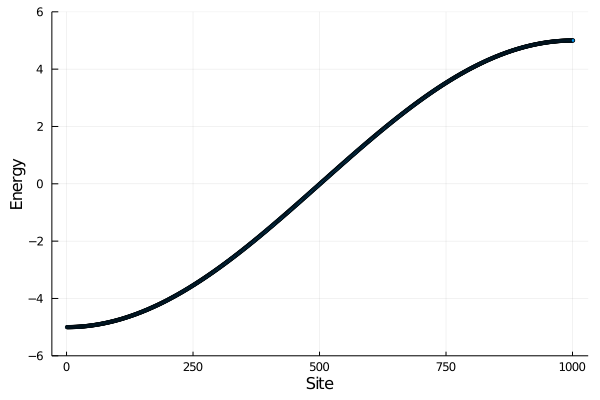
e_dos, dos = dos_broadening(es)
dos = plot(dos,e_dos, ylabel="Energy", xlabel="DOS",leg=false,
ylims=(-W-1,W+1))
l = @layout [ a b]
plot(band,dos,layout=l)
savefig("../figures/C.1_bandos_ring_t=$(t)_N=$(N)_E0=0.pdf")
Example: with an impurity
graph LR;
1((1))---2((2))---3((3))---4((4))---5((...))---6((1))---7((...));
style 3 fill:#bbf,stroke:#f66,stroke-width:1px,color:#fff
# If the ring has an impurity in the middle
function buildHring_impurity(t,Δ,N=1001)
H = SymTridiagonal(zeros(N),t*ones(N-1))
H = convert(Matrix,H)
H[N,1] = H[1,N] = t
H[N÷2,N÷2] = Δ
H
end
t = 2.5; N = 1001; Δ = -2; impuritysite = N÷2
println("C.2. Ring with $N sites with t = $t, impurity at $impuritysite Δ = $Δ")
H = buildHring_impurity(t,Δ,N)
es, vs = eigen(H)
println("Impurity state with E = $(es[1])")
W = 2abs(t) # half-bandwith
band = scatter(es, xlabel="Site", ylabel="Energy",ms=2,leg=false,
ylims=(-W-1,W+1))
e_dos, dos = dos_broadening(es)
dos = plot(dos,e_dos, ylabel="Energy", xlabel="DOS",leg=false,
ylims=(-W-1,W+1))
l = @layout [ a b]
plot(band,dos,layout=l)
#savefig("../figures/C.2_bandos_ring_t=$(t)_N=$(N)_E0=0_middleimpurity=$Δ.pdf")
C.2. Ring with 1001 sites with t = 2.5, impurity at 500 Δ = -2
Impurity state with E = -5.385164807134497
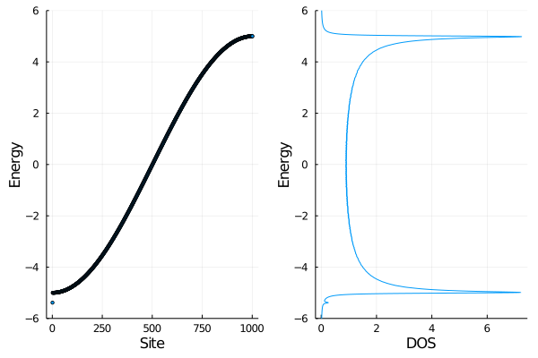
plot(vs[:,1].*vs[:,1],xlims=(490,510), label="Bound state",
ylabel="Probability",xlabel="Site",
title="Contribution of site orbitals to impurity state")
#savefig("../figures/C.2_boundstate_ring_t=$(t)_N=$(N)_E0=0_middleimpurity=$Δ.pdf")
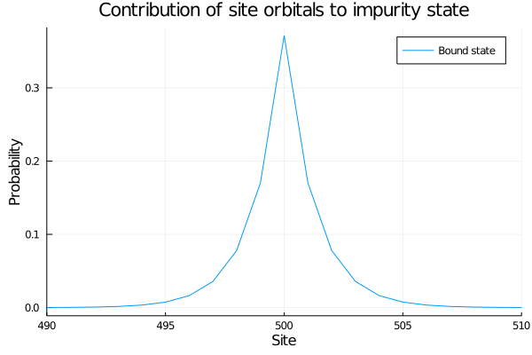
A generic tight binding procedure
Generic function to solve tight-binding hamiltonian, and plot bands, DOS, and PDOS.
function tight_binding(hamiltonianConstructor::Function,params,name)
@unpack t, N, Δ, impuritysite = params
if ismissing(Δ)
println("$name with $N sites with t = $t")
else
println("$name with $N sites with t = $t, impurity at $impuritysite, Δ = $Δ")
end
H = hamiltonianConstructor(params...)
es, vs = eigen(H)
W = 2abs(t) # half-bandwith 1D
emargin = 1.5
println("Lowest energy state with E = $(es[1])", es[1]<-W ? " (surface state)" : "")
band = scatter(es, xlabel="Site", ylabel="Energy",ms=2,leg=false,
ylims=(-W-emargin,W+emargin))
e_dos, dos = dos_broadening(es)
dos = plot(dos,e_dos, xlabel="DOS",leg=false,
xlims=(0,1),ylims=(-W-emargin,W+emargin))
e_pdos1, pdos1 = dos_broadening(es,vs[1,:].*vs[1,:])
pdos = plot(pdos1,e_pdos1,label="Site 1", ylims=(-W-emargin,W+emargin))
e_pdos500, pdos500 = dos_broadening(es,vs[N÷2,:].*vs[N÷2,:])
pdos = plot!(pdos, pdos500, e_pdos500, label="Site $(N÷2)",
xlims=(0,0.0013),
xlabel="PDOS")
l = @layout [ a b c]
plot(band,dos,pdos, layout=l, size=(1200,400),
left_margin=5mm,bottom_margin=5mm,
right_margin=0mm,top_margin=0mm)
#if ismissing(impuritysite)
# savefig("../figures/$(name)_t=$(t)_N=$(N)_E0=0.pdf")
#else
# savefig("../figures/$(name)_t=$(t)_N=$(N)_E0=0_@$(impuritysite)=$Δ.pdf")
#end
end
Large chain
A long chain considering only nearest-neighbors hopings, all equal, with the possibility of having an impurity in the middle
function buildHchain_tridiag(t,N=1001)
H = SymTridiagonal(zeros(N),t*ones(N-1))
end
function buildHchain(t,N=1001,Δ=missing,impuritysite=missing)
if ismissing(Δ)
# homoatomic chain
return buildHchain_tridiag(t,N)
end
H = SymTridiagonal(zeros(N),t*ones(N-1))
H = convert(Matrix,H)
H[impuritysite,impuritysite] = Δ
H
end
We will explore Schokley/Tamm surface states
Example D.1: Chain without impurity
graph LR;
1((1))---2((2))---3((3))---4((4))---5((...))---6((N));
name = "D.1. Chain"
params = (t=2.5,N=1001,Δ=missing,impuritysite=missing)
tight_binding(buildHchain,params,name)
D.1. Chain with 1001 sites with t = 2.5
Lowest energy state with E = -4.999975424409872
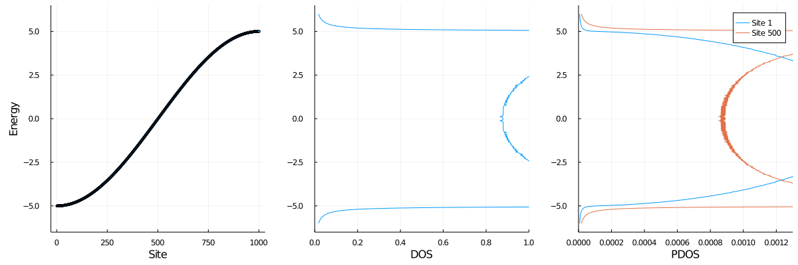
Example D.2: Impurity in the middle
graph LR;
1((1))---2((...))---3((N/2-1))---4((N/2))---5((N/2+1))---6((...))---7((N));
style 4 fill:#bbf,stroke:#f66,stroke-width:1px,color:#fff
name = "D.2. Chain"
params = (t=2.5,N=1001,Δ=-2,impuritysite=500)
tight_binding(buildHchain,params,name)
D.2. Chain with 1001 sites with t = 2.5, impurity at 500, Δ = -2
Lowest energy state with E = -5.385164807134504 (surface state)
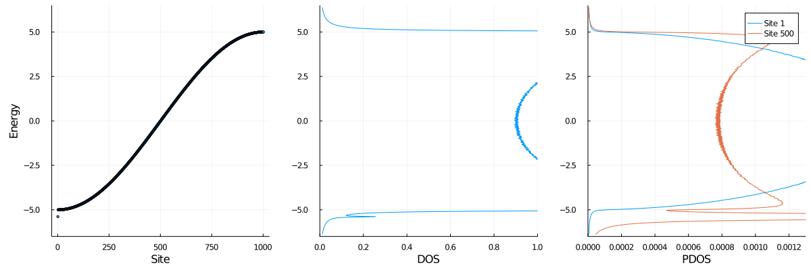
Example D.3: Impurity at the surface
graph LR;
1((1))---2((...))---3((N/2-1))---4((N/2))---5((N/2+1))---6((...))---7((N));
style 1 fill:#bbf,stroke:#f66,stroke-width:1px,color:#fff
name = "D.3. Chain"
params = (t=2.5,N=1001,Δ=-2,impuritysite=1)
tight_binding(buildHchain,params,name)
D.3. Chain with 1001 sites with t = 2.5, impurity at 1, Δ = -2
Lowest energy state with E = -4.99997561943913
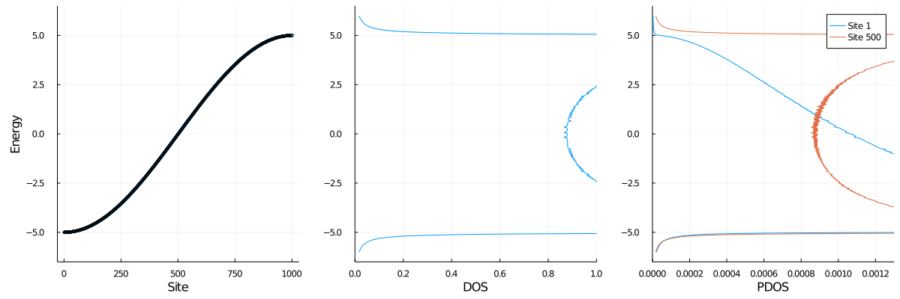
Example D.4: Impurity at the surface, strong impurity
graph LR;
1((1))---2((...))---3((N/2-1))---4((N/2))---5((N/2+1))---6((...))---7((N));
style 1 fill:#bbf,stroke:#f66,stroke-width:1px,color:#fff
name = "D.4. Chain"
params = (t=2.5,N=1001,Δ=-4,impuritysite=1)
tight_binding(buildHchain,params,name)
D.4. Chain with 1001 sites with t = 2.5, impurity at 1, Δ = -4
Lowest energy state with E = -5.562499999999997 (surface state)
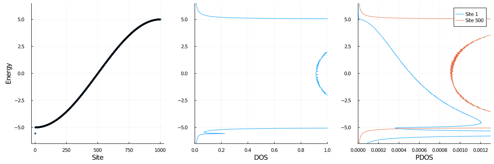
Finite effects are also interesting
Discrete chain
graph LR;
1((1))---2((2))---3((3))---4((4))---5((5))---6((...))---9((9));
style 1 fill:#bbf,stroke:#f66,stroke-width:1px,color:#fff
Example E.1: Weak impurity
name = "E.1. Finite Chain"
params = (t=2.5,N=9,Δ=-2,impuritysite=1)
tight_binding(buildHchain,params,name)
E.1. Finite Chain with 9 sites with t = 2.5, impurity at 1, Δ = -2
Lowest energy state with E = -4.853039707148026
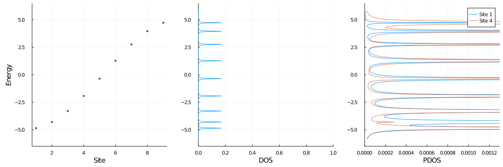
Example E.2: Strong impurity
name = "E.2. Finite Chain"
params = (t=2.5,N=9,Δ=-4,impuritysite=1)
tight_binding(buildHchain,params,name)
E.2. Finite Chain with 9 sites with t = 2.5, impurity at 1, Δ = -4
Lowest energy state with E = -5.562184783729448 (surface state)
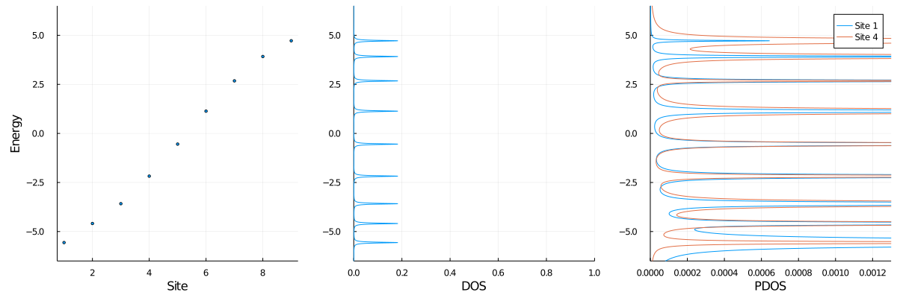
Two sites per cell with $s$ orbitals
function tight_binding_1D_2sites(a,Δ₁₂,t)
# 1D chain/ring with 2 sites per unit cell, s orbitals
b = 2a # unit cell with two sites
ε1 = 0 # without loss of generality energy reference at 0
ε2 = Δ₁₂
kpath = range(-π/b,π/b,length=100)
Enk = zeros(2,length(kpath))
for (ik,k) in enumerate(kpath)
H_k = [ ε1 2t*cos(k*a);
2t*cos(k*a) ε2 ]
e, vs = eigen(H_k)
Enk[:,ik] = e
end
plot(kpath/π,[Enk[1,:], Enk[2,:]],
label=["Ground state" "Excited state"],
xlabel="k pi/a", ylabel="Energy",
leg = :inside,
)
#savefig("../figures/1d_2sites.pdf")
end
Example
tight_binding_1D_2sites(1,2,2) # a, Δ₁₂, t
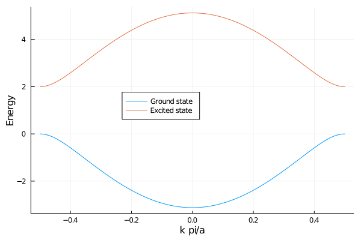
Two sites per cell with $s$ and $p$ orbitals
function tight_binding_1D_2sites_sp_orbs(a,Δ₁₂,t)
# 1D chain/ring with 2 sites per unit cell, sp orbitals
# Redefined ψpk = i 1/√N * ∑R₂ exp(ikR₂) ϕp(r-R₂) to have a real matrix
b = 2a # unit cell with two sites
εs = Δ₁₂
εp = 0 # without loss of generality energy reference at 0
kpath = range(-π/b,π/b,length=100)
Enk = zeros(2,length(kpath))
for (ik,k) in enumerate(kpath)
H_k = [ εs -2t*sin(k*a);
-2t*sin(k*a) εp ]
e, vs = eigen(H_k)
Enk[:,ik] = e
end
plot(kpath/π,[Enk[1,:], Enk[2,:]],
label=["p state" "s state"],
xlabel="k pi/a", ylabel="Energy",
leg = :right,
)
#savefig("../figures/1d_2sites_sp_orbs.pdf")
end
tight_binding_1D_2sites_sp_orbs(1,2,2) # a, Δ₁₂, t
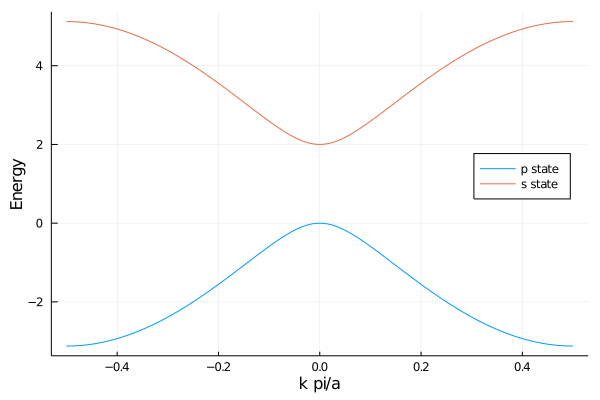
Two dimensional lattice
function tight_binding_2D(a,b,Δ₁₂,ta,tb)
# 2D rectangular lattice with 1 site per unit cell, s orbitals
@assert a == b # does not handle rectangular with analytic formula
@assert Δ₁₂ == 0 # does not handle ≠ ε with analytic formula
ε1 = 0 # without loss of generality energy reference at 0
ε2 = Δ₁₂
Hamiltonian(kx,ky) = [ ε1 2ta*cos(kx*a) + 2tb*cos(ky*b);
2ta*cos(kx*a) + 2tb*cos(ky*b) ε2 ]
# ............................
# Band plot
nkpts = 100
kpath = zeros(2,3nkpts)
kpath[1, 1:nkpts] = range(0,π/a,length=nkpts)
kpath[2, 1:nkpts] .= 0
#
kpath[1,(nkpts+1):2nkpts] .= π/a
kpath[2,(nkpts+1):2nkpts] = range(0,π/b,length=nkpts)
#
kpath[1,(2nkpts+1):3nkpts] = range(π/a,0,length=nkpts)
kpath[2,(2nkpts+1):3nkpts] = range(π/b,0,length=nkpts)
Enk = zeros(2,3nkpts)
for ik in 1:3nkpts
kx = kpath[1,ik]
ky = kpath[2,ik]
H_k = Hamiltonian(kx,ky)
e, vs = eigen(H_k)
#Enk[:,ik] = e # FIXME
Enk[1,ik] = ε1 + ε2 - 2abs(ta)*cos(kx*a) - 2abs(tb)*cos(ky*b) # analytic formula
end
#plot(1:3nkpts,[Enk[1,:],Enk[2,:]],
#plot(1:3nkpts,Enk[1,:],
# label=["Ground state" "Excited state"],
# xlabel="kpath/pi", ylabel="Energy",
# leg = :inside,
# )
#savefig("2d_1sites.pdf")
fig = pyplt.figure()
fig.set_dpi(260)
ax = fig.add_subplot(111)
ax.plot(1:3nkpts,Enk[1,:], label="Ground state")
ax.xaxis.set_major_locator(mpl.ticker.MultipleLocator(100))
ax.set_xticklabels(["d","(0,0)T", "(1,0)T", "(1,1)T", "(0,0)T"])
ax.set_xlim(0,3nkpts)
ax.set_ylim(-2abs(ta)-2abs(tb),2abs(ta)+2abs(tb))
ax.grid(true)
ax.set_xlabel("(kx,ky)T pi/a")
ax.set_ylabel("Energy")
fig.tight_layout(pad=0.1)
pyplt.savefig("../figures/2d_1sites.pdf")
# ..........................................................
# BZ integration
nmesh = 101
Enk = zeros(2,nmesh,nmesh)
kxrange = range(-π/a,π/a,length=nmesh)
kyrange = range(-π/b,π/b,length=nmesh)
for (ikx,kx) in enumerate(kxrange),
(iky,ky) in enumerate(kyrange)
H_k = Hamiltonian(kx,ky)
#e, vs = eigen(H_k) # FIXME
##_,_,eschur = schur(H_k)
Enk[1,ikx,iky] = ε1 + ε2 - 2abs(ta)*cos(kx*a) - 2abs(tb)*cos(ky*b) # analytic result a = b; ...
#if abs(kx) + abs(ky) < pi/a
# Enk[:,ikx,iky] = e
#else
# Enk[:,ikx,iky] = reverse(e)
#end
#isapprox(e[1] , ε1 + ε2 + 2ta*cos(kx*a) + 2tb*cos(ky*b), atol=1e-1) || error("wrong eigenvalue $(e[1]) ≠ $(ε1 + ε2 + 2ta*cos(kx*a) + 2tb*cos(ky*b))")
#@show kx, ky
#println(e[1]," ", e[2], " ", ε1 + ε2 - 2abs(ta)*cos(kx*a) - 2abs(tb)*cos(ky*b))
#e[1], e[2] = e[2], e[1]
end
fig = pyplt.figure()
fig.set_dpi(260)
ax = fig.add_subplot(111)
ax.set_aspect("equal")
cont = ax.contourf(kxrange./π,kyrange./π,Enk[1,:,:], levels=15)
#cont = ax.plot_surface(kxrange./π,kyrange./π,Enk[1,:,:])
#cont = ax.imshow(Enk[1,:,:],extent=(-1,1,-1,1))
# Set axis labels
ax.set_xlabel("kx pi/a")
ax.set_ylabel("ky pi/b")
pyplt.colorbar(cont,format="%+3.1f")
fig.tight_layout(pad=0.1)
pyplt.savefig("../figures/2d_1sites_contour.pdf")
end
tight_binding_2D(1,1,0,1,1) # a, b, Δ₁₂, ta, tb
#tight_binding_2D(10,5,2,0.5,1) # a, b, Δ₁₂, ta, tb
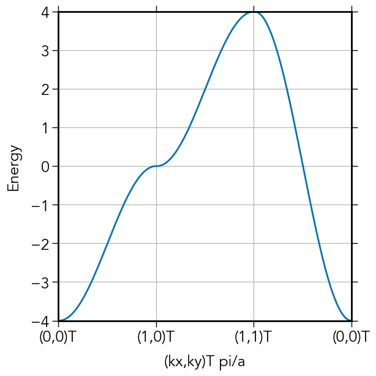
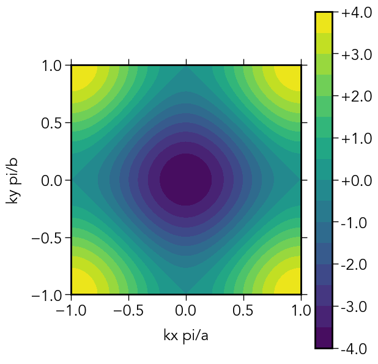
Daniel Menéndez Crespo
Postdoctoral Associate
My research interests include topological quantum chemistry, chemical bonding and scientific computing..